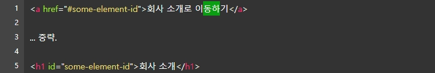
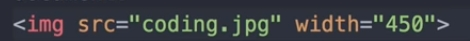

제목(heading) 태그는 문서 내에 제목을 표현할 때 사용하는 태그입니다.
태그 이름은 heading을 줄여서 h로 쓰며, 제목의 레벨에 따라서 h1~h6까지 있습니다.
P 태그
단락(paragraph) 태그는 paragraph를 줄여서 p로 씁니다.
a (Anchor) 태그
다른 문서로 이동할 수 있는 링크생성하는 태그
href="링크주소,또 는 코딩내 다른 페이지"글의 링크를 걸어줄때 사용하는 속성
target="" 링크를 클릭 할 시 창을 어떻게 열어야 하는지 설정하는 속성
_self : 링크를 클릭한 해당 창에서 연다.
_blank : 링크를 새창으로 연다.
_parent : 부모 창에서 연다. (부모 창이 없으면 _self 속성으로 처리)
_top: 전체 브라우저 창에서 가장 상위의 창에서 연다. (부모 창이 없으면 _self 속성으로 처리)
a title=""링크 커서를 올릴때 주석 설명을 한다.
ex)
tag 예시
커서를 올려봅시다.
내부링크
a 태그를 통해 만들어진 링크가 꼭 외부로 가는 것은 아니다. a 태그를 통해 내부 특정
요소로 초점을 이동 할 수 있는데 이를 내부링크라 한다.
내부링크를 사용할 때는 herf 속성값에 #을 쓰고 그 뒤에 페이지 내에서 이동하고자 하는
요소의 id 속성값을 적으면 된다.

상대경로는 현재 웹 페이지를 기준으로 상대적으로 이미지의 위치를 나타내는 경로이고,절대경로는 실제 그 이미지가 위치한 곳의 전체 경로
상대경로 : ./ 현제 페이지가 있는 폴더를 나타냄 ../ 상위 폴더를 나타냄 , folder/
절대경로 : C://~~~ , http:// 등등
alt 속성
이미지의 대체 텍스트를 입력한다
CSS 속성 width (가로길이) 와 height (세로길이)
 예시본
B.I.U.S 태그
b (bold): 글자를 굵게 표현한다.
i (italic) : 글자를 이탤릭체로 표현한다.(기울임)
u (underline) : 글자에 밑줄을 표현한다.
s (strike) : 글자에 중간선을 표현한다
의미없이 요소를 묶기 위한 div와 span태그
div : block-level
ex) p 태그
span : inline-level
ex) B.I.U.S 태그
리스트 태그 ul,ol,dl
ul 태그
unordered list로 순서가 없는 리스트, 나열된 항목들이 순서와 상관없을 때 사용하며 자식태그로 li 태그를 가지고있다.
ol 태그
Ordered list로 순서가 있는 리스트, 순서가 중요할때 사용 자식태그로 li 태그를 가지고있다.
di 태그
Description list로 용어를 설명하는 리스트 자식 태그로 dt 태그와 dd 태그를 가지고있다.
- dt 태그 : 용어를 구분
- dd 태그 : 용어의 정의나 설명이 들어간다
table (표) 요소
td,th : 데이터 셀
tr : 행
caption : 표의 제목
thead : 제목 행을 그룹
tfoot : 바닥 행을 그룹
tbody : 본문 행을 그룹
colspan : 셀을 가로방향으로 병합 속성
rowspan : 셀을 세로방향으로 병합 속성
colgroup :
col
scope
headers
HTML5.1 ~ 현재(5.2): 이 뒤에 위치해야 합니다. 의 위치가 앞에 나올 경우 웹 접근성의 키보드의 초점 이동 순서 항목에 문제가 있기 때문에 변경되었습니다.
Form 요소
input 태그
- 대표적인 태그로 다양한 type 속성으로 여러 종류의 입력 양식으로 나타난다. form(태그)action(속성)="" 감싸서 동작시켜 서버에 전달한다
text:문자입력칸을 만듬 , placeholder : 문자입력칸 안에 text를 만듬
radio : 한가지를 선택해야할때 체크칸을 만듬. 남자여자
checkbox : 체크박스를 만듬 radio 와 다르게 중복선택 가능
checked (속성): 참인가 거짓인가
name 속성 : 그룹화 시키는 속성
file : 파일 선택 내 컴퓨터에 있는 파일을 서버에 올릴때 사용
submit : 제출 버튼
reset : 초기화 버튼
button : 아무런 기본동작도 하지않는 그냥 버튼 직접 커스텀하여 동작기능을 만들어야한다
image : 이미지를 넣어 사용하는 버튼 img 태그 처럼 src ait widht height 속성과 함께 사용